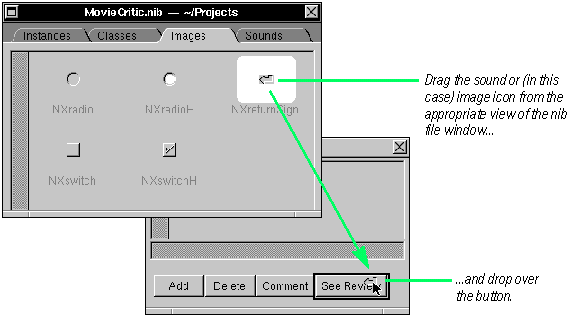

Their coats were brushed, their faces washed,
And this was odd, because, you know,
Is it a world to hide virtues in?
 Shakespeare, Twelfth Night
Shakespeare, Twelfth Night
| All objects on Interface Builder's standard palettes have attributes that you can initialize through the Inspector panel. This chapter describes many of those attributes, especially the effect they have on appearance and behavior.
Working with Interface Builder |
2
Setting Object
Attributes
Examining an object's attributes
Customizing your windows and panels
Setting button attributes
Associating sounds and images with buttons
Managing sounds and images
Customizing titles, text fields, and scroll views
Setting textual attributes
Setting box and group attributes
Customizing browsers
Setting attributes of menu cells and pop-up lists
Setting matrix attributes
Automatically resizing objects
Using tags
| But four young Oysters hurried up, Their coats were brushed, their faces washed, And this was odd, because, you know,
Is it a world to hide virtues in? |
| EXAMINING AN OBJECT'S ATTRIBUTES |
| 1 | Select an object in the interface. | |
| 2 | Choose Inspector from the Tools menu. |
| You can examine the attributes of any object, whether that object is a graphical object such as a button or panel, or a non-UI object in the Instances display. First select the object and then choose the Inspector command from the Tools menu.
Tip: You can also bring up the Attributes display of the Inspector panel by pressing Command-1. The attributes for the selected object are then displayed in the Inspector panel.
Once the Inspector panel is visible on the screen, it stays there until you close it. As you select different objects, their attributes are displayed (or dimensions or connections or help links--whatever Inspector display is current). You can also select objects in the Instances display and examine their attributes. Some of these objects (like First Responder) have no attributes. Others, like an instance of a custom class, have only one attribute. Click an object in the Instances display to select it.
If the Inspector panel is not visible, choose Tools Inspector or press Command-1. As before, the attributes for the selected object are displayed. |
| CUSTOMIZING WINDOWS AND PANELS |
| Set the window title. | ||
| Determine how the Window Server buffers window contents. | ||
| Choose the window's controls. | ||
| Set the window's options. |
| A single Attributes display of the Inspector panel serves for both windows and panels.
Window Backing When a window is partially covered by another window and then is re-exposed, |
| Nonretained: The application is responsible for all drawing on the screen because there is no buffer. If the application doesn't do anything when the window is uncovered, the re-exposed part is replaced by the background color. Nonretained windows are appropriate for transitory images that you don't need to save. | ||
| Retained: The Window Server copies pixels to the buffer for all covered parts of the window. When an obscured part of the window is later revealed, the Window Server redraws only that part--using the contents of the buffer-- and does not redraw the rest of the window. A retained window is the appropriate choice for most situations. | ||
| Buffered: The Window Server first draws in the buffer and then copies the buffer to the screen. When an obscured part of the window is revealed, the Window Server refreshes the entire window using the buffer. A buffered window is appropriate when you don't want users watching complicated images being rendered on-screen. It is also the best choice for animation or for redrawing lines of rapidly typed text. |
| Changing Class and Custom Windows In the Class section of the Attributes display, you can change the class of a window to Window, Panel, or any custom subclass of Window.
Window Controls
Window Options |
| Option | Description | |
| Free when closed | The window is to be freed when it is closed. | |
| Hide on deactivate | The window should disappear when the application is deactivated. | |
| VIsible at launch time | The window should appear when the application is launched. | |
| Deferred | A window device for this object is deferred until it's placed on-screen. | |
| One shot | The window device is freed when the window is removed from the screen. | |
| Dynamic depth limit | The window's depth limit can change to match the depth of the screen. | |
| Wants to be color | The window is displayed on a color screen (2-monitor systems only). |
What's the Difference Between a Window and a Panel? A panel is a window that serves an auxiliary function within an application. Because it's intended for a supporting role, a panel typically has these features: |
| A panel can be the key window, but never the main window. | ||
| When the application is deactivated, the panel moves off-screen (it's removed from the screen list). When the application is reactivated, the panel appears again. | ||
| When a panel is closed, it moves off-screen; it isn't destroyed. | ||
| Unlike a window, a panel forwards Command key-down events (like carriage returns) to its views. | ||
| When instantiated programmatically, panels have a grey background by default, while programmatically created windows have a white background. |
| Also, a panel usually has fewer controls: sometimes only a close button; rarely a resize bar; and sometimes no controls at all.
You can make some panels exhibit special behavior for specialized roles: |
| A panel can be precluded from becoming the key window until the user makes a selection in it. | ||
| Some panels (e.g., palettes) can float above windows and other panels. | ||
| You can have a panel receive mouse and keyboard events while an attention panel is on-screen. Actions within the panel can thus affect the attention panel. |
| SETTING BUTTON ATTRIBUTES |
| Enter the button's main and alternate titles. | ||
| Select the button type. | ||
| Specify any key equivalent. | ||
| Specify button options. |
| The Attributes display for buttons enables you to set a button's type, title, icon, alternate title and icon, and various other characteristics. The object labeled Button on the Views palette is only one style of button (albeit the most common style). The palette also holds radio buttons and switch buttons. Using the Attributes display for buttons, you can customize any palette button, making it something that is uniquely suitable for a particular circumstance.
Titles and Icons The text in the Title field is what appears in most buttons; this is the text you can select by double-clicking inside the button. The name in Icon identifies an image stored in the nib file (Images display of the nib file window) that appears within the button. The alternate title (Alt. Text) and the alternate icon (Alt. Icon) appear when the user clicks a button of type Momentary Change or Toggle. Key Equivalent The Key field identifies a keyboard alternative to clicking the button. Possible values are: \b (Backspace), \d (Delete), \e (Escape), \t (Tab), and \r (Return). Button Type |
| Type | Button Behavior When Clicked | |
| Momentary Push | Button is highlighted, appears to be pressed. | |
| Momentary Change | Alternate button title and icon appear (as long as mouse button held down). | |
| Momentary Light | Button is highlighted, but no illusion of being pressed. | |
| Push On/Push Off | Click once and button is highlighted with illusion of being pushed in; click again and it returns to normal. | |
| On/Off | Click once and button is highlighted; click again and it returns to normal. | |
| Toggle | Alternate button title and icon appear; click again for main title and icon. |
| Button Options |
| Option | Description | |
| Bordered | A line is drawn around the button's border. | |
| Transparent | The button has no border, text, icon, or background color. | |
| Continuous | The button sends its action message continuously when pressed. | |
| Disabled | Prevents activation of the button; text is in gray. | |
| Selected | The button, when initialized, is to be selected (switch and radio buttons). |
The Anatomy of a Button A button is essentially a two-state Control object. When a user clicks a button, an action message is sent to a target object. It is two-state because it is either on or off, and when it is on, it typically sends its action message. For a button, the states are also known as "normal" (off) and "alternate" (on). You can set a button's attributes so that the normal and alternate states show different images, or so that in the alternate state the button is highlighted. You can configure a button to send its message continuously rather than discretely. You can associate a command key-equivalent with a button. A button is actually a compound object: Most of Button's methods match identically declared methods in ButtonCell. Aside from dispatching the action message, Button's unique role is to set the font of the key equivalent, and to manage the highlighting or depiction of the Button's current state.
The Icon Position and Pixels Inset controls as well as the Sound and Icon fields are described in detail in the next task, "Associating Sounds and Images with Buttons." For more information on the Tag field, see the last task in this chapter: "Using Tags." You might think of storing specially configured buttons on a dynamic palette. See Chapter 5, "Using Dynamic Palettes" for complete information. |
| ASSOCIATING SOUNDS AND IMAGES WITH BUTTONS |
| Drag the icon representing a sound or image from the nib file window or the Workspace and drop it over a button. |
| Or |
| Enter the file name of the sound or image in the appropriate field of the button's Attribute's display. |
| You associate a sound or image with a button by dragging the icon representing the resource and dropping it over the button.
 When you click a button that has a sound associated with it, it plays the sound. Images appear in buttons with or without text. They can play more than an iconic or decorative role; when you drag the NXreturnsign image onto a button, for instance, the carriage return key-equivalent is associated with the button ("\r" in the Key field). You can drag sounds and images from the Workspace Manager's File Viewer too.
The sound or image automatically gets added to the Sound or Image section of the nib file window. Several fields and controls in the Inspector's Attributes display for buttons relate to images and sounds.
Note that the name of a sound or image in this display is the file name (blat.snd and NXreturnsign.tiff, for example) minus the extension. Instead of dragging and dropping sound and image icons, you can type their file names (minus the extension) in the appropriate field. However, you should insert the resource into the nib file or the project before typing its name in the Attributes display. Tip: For most situations, the recommended course of action is to add sounds and images to your project. If you add resources only to a nib file, those resources might not be available to an application unless the nib file has been loaded. Icon Position and Pixels Inset The six buttons in the Icon Position group position the button title and icon relative to each other. Thus you can have the title above, below, to the left, or to the right of the icon, or show only title, or show only icon. The Pixels Inset pull-down menu gives several pixel distances for adjusting the spacing between the icon and the nearest edge of the button. Tip: If you want to import images into your interface for decorative purposes, drop |
| MANAGING SOUNDS AND IMAGES |
| To add an image or file, drag the file icon representing the resource from the File Viewer and drop it over the nib file window. | ||
| Examine the sound or image in the Inspector's Attributes display. |
| As shown in the task "Associating Sounds and Images with Buttons," you can add sounds and images to a nib file as a side effect of associating those resources with a button. You can also insert sounds and images into a nib file by dragging them from the Workspace and dropping them over the nib file window.
You can drop a sound or image over the nib file window no matter what display is showing. The sound or image file will be correctly added to the appropriate display. Although the association of sounds and images with buttons is an important reason for putting them into a nib file, there are other reasons. When you play a sound or composite an image in your code, the search path (if you supply no path) starts with the application's executable (already loaded resources). the main bundle, and the main bundle's .lproj directories. Then these directories are searched: |
| the appropriate subdirectory of the user's ~/Library directory | ||
| the appropriate directory in /LocalLibrary | ||
| the appropriate directory in /NextLibrary |
| If you do not want to risk a sound or image not being in one of these standard directories, then you should store it in the a nib file or in the project.
Sounds and images have their own Attributes displays. If the Inspector panel is
If your system has a microphone or some other input source connected, you can record new sounds. Click OK to save new sounds. For images, the Attributes display is mostly useful for images that are too large to show in the Images display of the nib file window. |
| CUSTOMIZING TITLES, TEXT FIELDS, AND SCROLL VIEWS |
| Set background and text color, text alignment, border style, tag, and options affecting access to text. |
| NEXTSTEP gives you several ways to display, format, and control access to text. The Attributes displays for text fields, titles, and scroll views have controls for initializing those objects with various characteristics.
To see what certain effects look like, drag a text field onto a window and click the buttons on this display. Note that a title is a specially configured text field: non-selectable with transparent backgrounds and no borders. A ScrollView object is a compound object consisting of one or two Scroller objects and a ClipView object, which has as its document view (subview) a Text object in Interface Builder. The document view is what is scrolled. The ScrollView object has a slightly different Attributes display: no text alignment buttons and a different set of options. Options |
| Option | Description | |
| Editable | Set to permit the user to edit text. | |
| Selectable | Set to permit the user to select text. | |
| Scrollable | Set to enable typing beyond the borders of the field (text scrolls to the left -- TextField only). | |
| Multiple fonts allowed | Set to put text in RTF format. (ScrollView only). | |
| Graphics allowed | Set to put text in RTFD format (graphics can be inserted -- ScrollView only). |
| A tag is an internal identifier of an object that you can use in your code. See the task, "Using Tags," in this chapter for more information.
For more information on the TextField, ScrollView, Scroller, Text, and ClipView classes, see the appropriate specification in the NEXTSTEP General Reference. |
| SETTING TEXTUAL ATTRIBUTES |
| Set the font characteristics of selected text. | ||
| Set the alignment of selected text within its boundaries. |
| Text fields and scroll views (with Text objects as document views) are not the only palette objects that can contain text. Almost all palette objects--from buttons to browsers--can display text. You can set the font and alignment attributes of this text.
The Text submenu of the Format menu (shown at left) also has commands that affect selected text; it offers options for aligning text and for displaying, copying, and pasting the ruler in a Text object. With rulers you can set tabs and indentation. Note that rulers can only appear in Text objects (for instance, inside a scroll view). If you choose Font Panel from the menu (or press Command-t), the Font Panel is displayed.
You can use the standard menus for setting font and alignment attributes for any text in your interface. See the NEXTSTEP User's Guide and online help for complete information. |
| SETTING BOX (GROUP) ATTRIBUTES |
| Set title position, border style, and horizontal and vertical offsets. |
| When you group a selection of objects, a box encloses that object. The box (actually the box's content view) becomes the superview of the enclosed objects. If you select the box in Interface Builder, you can move, copy, paste, and delete the group of objects as one.
The box has several attributes that you can set.
You can also create a box object in your interface by dragging the Box object from the Views palette. To group objects within this box, double-click the box when it's on the interface. Then drag objects from a palette and drop them within the box. Double-click the box again when you're finished. You can drag a box onto your interface and then programmatically replace its content view (blank by default) with another View object, or programmatically add subviews to the content view. You can also manipulate this box to make decorative rectangles and lines. Tip: To make a line in an interface (such a a divider line between sections of a panel), drag a box onto the interface. Then switch off the title and make the box as narrow as possible in the required dimension (vertically or horizontally). Finally, set the offset (vertical or horizontal, whichever is applicable) to zero. For more information on Box objects, see the specification of the Box class in the NEXTSTEP General Reference. |
| CUSTOMIZING BROWSERS |
| Select the browsing controls and browser options. |
| Browsers display lists of data and allow users to select items from the list. They can hold one-dimensional lists or hierarchically organized lists of data such as directory paths. Browsers display these hierarchical levels in columns, which users can navigate using buttons or scrollers. An entry in a column can be either a leaf node or a branch mode. Leaf nodes terminate a path; branch nodes, which have a right-arrow icon, lead into the next level in the hierarchy.
Browsers have attributes affecting their navigation controls, methods of selection, and appearance.
The Horizontal Scrolling and Vertical Scrolling buttons determine whether the browser uses scrollers or buttons for navigating lists and levels. Click these radio buttons to see what the scrolling controls look like in various combinations. Options |
| Option | Description | |
| Allow multiple selection | Permits the selection of more than one node at a time. | |
| Allow empty selection | Makes it possible to have no cells selected; otherwise, first cell in column is selected by default. | |
| Allow branch selection | Permits the selection of branch nodes (such as directories). | |
| Separate columns | Separate columns by a bezeled bar (if not set, a black line appears). | |
| Display titles | Titles are above columns and column divider is bezeled bar. |
| SETTING ATTRIBUTES OF MENU CELLS AND POP-UP LISTS |
| Set whether the list is a pop-up or pull-down type (not applicable to menu cells). | ||
| Set whether the cell is initially disabled. | ||
| Assign a tag to the cell. |
| Menus, pop-up lists, and pull-down lists are compound objects that contain MenuCell objects. The Attributes displays for menu cells and pop-up/pull-down lists are almost identical. The following is the display for pop-up/pull-down lists.
If you disable a menu cell in Interface Builder, its text is gray when the application is launched. When the user clicks the cell, no action message is sent. If conditions change to make the cell's function relevant, your code must re-enable the cell. Pop-Up Lists and Pull-Down Lists The object "Item1" on Interface Builder's Views palette is actually a trigger button whose target is a PopUpList object. When you double-click the trigger button on your interface, three menu cells appear; you can initialize their titles or (in the Attributes display) disable them and assign them tags. In a running application, the PopUpList object, once triggered, tracks the mouse until the user releases it, at which time it sends the selected action message to its target and disappears.
A pop-up list's trigger button always displays the item that was last selected. In a pull-down list the trigger button's title is fixed. This type of list is effective for selecting actions in a very specific context, like the "Operations" pull-down list in Interface Builder's Classes display.
Most of the objects you can drag from the standard Interface Builder palettes are actually compound objects. They consist of two or more objects that work together in specific ways. Control and ActionCell A Control (an instance of a Control subclass) functions as an event translator. It translates a user event like a mouse click into a action message and directs that message to another object in the application (the target). Controls supply the mechanism but not the content of the target/action paradigm. They need ActionCell objects (or instances of ActionCell subclasses) to hold this information: |
| target - the object receiving the action message | ||
| action - the method that specifies what the target is to do |
| At least one of these cells occupies the same area as its Control. Because it descends from Cell, a cell also has content (text or image), which it draws upon request from its Control.
This division of responsibility makes for greater efficiency. This is especially true because a Control can have multiple cells and send a different action message to a different target for each of those Cells. Since Cells are lightweight objects, it is more efficient in some contexts to associate one Control with many Cells. Matrices Instances of Button, Slider, and TextField are Control objects each of which are bound to a single Cell. A Matrix (an instance of the Matrix class) is also a Control, but it manages more than one Cell. It organizes its Cells in rows and columns. The Cells must be of the same size and usually are of the same class (although a Matrix can have instances of different subclasses of the Cell class). A Matrix allows each of its Cells to have its own action and target. A Matrix also has its own action and target. If a Cell doesn't have an action, the Matrix sends its own action to its own target. If a Cell doesn't have a target, the Matrix sends the Cell's action to its own target. In Interface Builder you can convert a single-celled Control object into a Matrix by Alternate-dragging a resize handle of that Control. The associated Cell object, whether it is a ButtonCell, SliderCell, or TextFieldCell, is duplicated for each row and column of the Matrix. Forms are a special type of matrix (Form inherits from Matrix). They have special Cells (instances of FormCell) that compose both the form entry fields and the titles of those fields. A Menu, though actually a descendent of Window, depends for its behavior on the Matrix object in its content area, which is filled with MenuCells. Special Compound Objects Some objects on Interface Builder's standard palettes are of a more complex composition. |
| Scroll View This object coordinates the interaction between Scroller objects and a ClipView object to scroll a document. It consists of one or two Scrollers, a ClipView object, and the document view, which is generally a Text object. |
| Browser This object has scroll bars or buttons for controls, and columns to show hierarchically organized data. Each column is a Matrix of NXBrowserCell objects. |
| Pop-Up List This object has different manifestations, depending on state. When not activated, it presents a button or button cell. When the user clicks this trigger button, a Matrix of MenuCell objects is displayed. |
| SETTING MATRIX ATTRIBUTES |
| Set the matrix selection mode. | ||
| Set the background gray of the matrix. | ||
| Inspect the cell prototype and change it, if necessary. | ||
| Set autosizing behavior and other properties of cells. |
| The Attributes display for matrices allows you to determine how a matrix and its cells look and behave.
Matrix Selection Mode You can set one of four selection modes to specify how cells behave when a user is dragging a mouse within a matrix. These modes also determine if selections in a matrix--a column of switch buttons, for example--are exclusive (only one allowed) or inclusive (multiple selections allowed). |
| Track: The cells track the mouse when it is within their bounds but do not highlight themselves. This mode would be suitable for a "graphic equalizer" matrix of sliders. Moving the mouse around causes the sliders to move under the mouse. | ||
| Radio: Only one cell in the matrix can be selected at a time, as is the typical case with a matrix of radio buttons. | ||
| Highlight: Each cell is highlighted while it tracks the mouse, then is unhighlighted when it is done tracking. This mode allows multiple selections within a matrix. A matrix of switch buttons commonly has this mode. | ||
| List: Cells are highlighted as the mouse is dragged across them, but they do not track the mouse. In this mode, a matrix supports multiple selection, enabling a user, for instance, to select a range of text. |
| Cell Prototype
When a Matrix object creates its cells, it typically makes them by copying a prototype cell stored as an instance variable. (It can also instantiate its cells from the cell's class.) You can examine and alter the attributes of this prototype cell through the Attributes display. Click the Inspect button to see the cell-prototype inspector.
If you change the prototype, be sure to apply the changes to existing matrices by selecting them, bringing up the Attributes display, and clicking the Match Prototype button. Cells Options |
| Option | Description | |
| Autosize | If set, the cells resize themselves whenever the matrix is resized, keeping the space between cells constant. If not selected, the space between cells changes. | |
| Selection by rect | Set to allow users to select entire rows or columns of cells by dragging the mouse. | |
| Set Return Sign | Click to have the carriage-return equivalent set in the last button cell of a matrix. This cell has both the carriage-return icon and control key associated with it. | |
| Match Prototype | If you've changed the cell prototype, click this button to apply the new prototype to the selected matrix. | |
| Tags = Position | Click this button to resequence the tags of the cells. When you create a matrix in Interface Builder, cells are assigned tag integers starting from zero. For two dimensional matrices, the progression is from left to right (row), then down (column). If you later add new cells to a matrix by Alternate-dragging it to the right or down, the new cells have tag numbers of zero. |
| A tag is an internal identifier of an object that you can use in your code. See the task, "Using Tags," in this chapter for more information. |
| AUTOMATICALLY RESIZING OBJECTS |
| 1 | Select an object. | |
| 2 | Choose the Size display of the Inspector panel. | |
| 3 | In the Autosizing view of the display, click lines to make them springs or click springs to make them lines. |
| When you resize a window, the View objects in the window must often adjust their size or the distances between themselves and other objects. The Size display of the Inspector panel lets you tell a selected object how to resize itself.
The lines inside and outside the box affect different aspects of resizing behavior.
If you do not make a view resize itself when its superview or window resizes, some ugly behavior could result. For instance, if the user makes a window small, objects that don't resize themselves could become truncated by the resized window's borders.. One recourse to this unwanted outcome is to specify a minimum size for the window.
You might need to make several iterations in Interface Builder--setting resizing characteristics in objects and shrinking the window in test mode--to determine what the ideal minimum size should be. When There Are Conflicts You can create an impossible resizing relationship, such as specifying as fixed the object's dimensions and its distance from the window's edges. In cases of conflict, an object's fixed dimension takes precedence over its fixed distance from a border. If all dimensions are made resizable, adjustments to the window or superview's changed dimensions are made equally to the object and its distance from a border. For examples of the effects of these "autosizing" characteristics on views within a resized window, see "Some Effects of Automatic Resizing" on the following pages. Interface Builder includes a test mode that simulates the actual operation of the inteface. In test mode, you can test the resizing behavior of your windows and views, see how connected objects communicate, play sounds associated with buttons, and do similar operations. Test mode does not test your custom objects or the connections custom objects have with the standard palette objects. See "Testing the Interface" in Chapter 3, "Making and Managing Connections" for more information.
The window below has two identical scroll view objects. Different autosizing "springs" are set in each, and then the window is resized in test mode. The screen shots under After Resizing show you the results. In the first example, one object resizes vertically while the other doesn't (distances to borders are absolute for both). The result: the object that doesn't resize itself is truncated when the window is vertically shortened. In the second example, both objects resize themselves, but Object B maintains its distance to surrounding objects. This causes Object B to be more severely resized than Object A. To learn more about the effects of resizing, try some experiments on your own using different combinations of objects and autosizing attributes. Object Before Resizing
This example interface (from the Lines sample project) incorporates autosizing attributes in such a combination that the window can shrink to a very small size and still be usable.
Here's how this behavior is aquired: The window's minimum size is set to a dimension just large enough for the main view to show content and for the slider and button to be manipulated.
The box containing the slider keeps the same distance from the window's adjacent edges, but resizes the gaps between itself and the other views. It resizes itself horizontally, but not vertically:
The button's autosizing attributes complements the box's attributes. It keeps the same distance from the window's adjacent edges, but resizes all other distances. It also resizes itself horizontally, but not vertically:
The main view of the interface (a custom view) maintains a constant distance from the window's edges, but is itself resizable in all directions:
|
| USING TAGS |
| 1 | In Interface Builder, specify the tag integers for objects. | |
| 2 | If the integers are not intrinsically meaningful, define constants for them in your source code. | |
| 3 | Send the tag message to a tagged object to get the integer. | |
| 4 | Evaluate the integer and act upon it. |
| Tags are integers that you use in your code to identify objects. They offer a convenient alternative to such methods of object identification as fetching an object's title. (What if the object't title changes while the application is running, or the object has no title?) Tag integers can also carry useful information associated with an object, and thus make it easier to integrate that information into a program. Tags are commonly assigned to matrices and to the cells contained by matrices.
You can specify tag integers in the Tag fields of most Attributes displays.
You can also set tag integers programmatically in most View objects by sending those objects the setTag: message. The integers that you assign could have some intrinsic value; for instance, they could be numbers that are multiplication factors for a document-zoom feature, or numbers that correspond to the number of a keypad in a calculator application. If the tag numbers are not instrinsically meaningful (that is, they're arbitrary), it's prudent to define constants to express them. |
 typedef enum {
typedef enum {
 LEFT = 1,
LEFT = 1,
 RIGHT,
RIGHT,
 BOTTOM,
BOTTOM,
 TOP,
TOP,
 HORIZONTAL_CENTERS,
HORIZONTAL_CENTERS,
 VERTICAL_CENTERS,
VERTICAL_CENTERS,
 BASELINES
BASELINES
 } AlignmentType;
} AlignmentType;
| When you need to identify a tagged objects in your code, use the tag method. |
 - align:sender
- align:sender
 {
{
 [self alignBy:(AlignmentType)[[sender selectedCell] tag]];
[self alignBy:(AlignmentType)[[sender selectedCell] tag]];
 return self;
return self;
 }
}